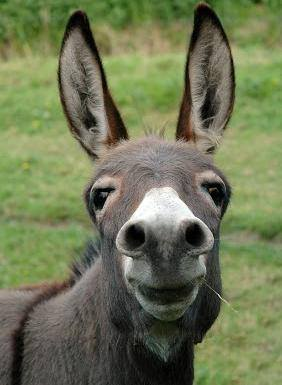

Letra: B

1 - Besta: Usado pra indicar quando algúem é/foi em alguma situação similar a uma besta, um animal. Similar a burro, jumento ou mula.
Usado em uma frase: Paulo foi besta de deixar o trabalho pra fazer depois do meio dia da data de entrega!
<-Clique aqui para voltar para a páginal inicial.